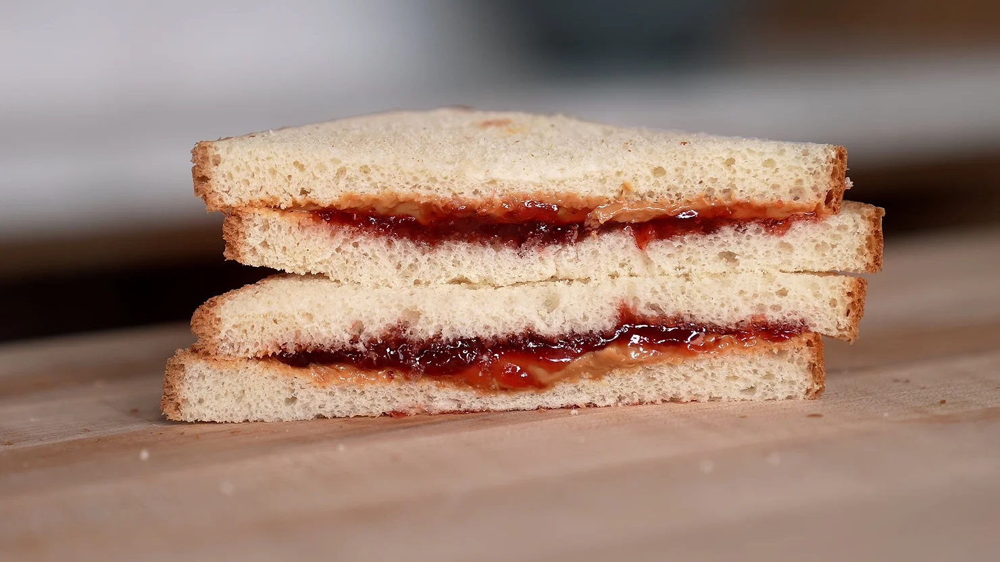

Peanut Butter & Jelly Sandwich

The best sandwich of all time
I used to make this for myself all the time as a kid.
From toddlers to michelin star chefs, anyone can prepare this and enjoy it at any point throughout the day.
What's also great about this recipe is how it won't break the bank.
Ingredients
- 2 slice white bread (Sunbeam preferred)
- 2-3 tablespoons (32-48g) creamy peanut butter (or crunchy if you prefer)
- 2 tablespoons (40g) strawberry jelly or jam (Bonne Maman preferred)
Steps
- Take your favorite white bread, your favorite peanut butter, and your best strawberry jam,
and layer them up. Slice on the diagonal, serve and enjoy.
Home